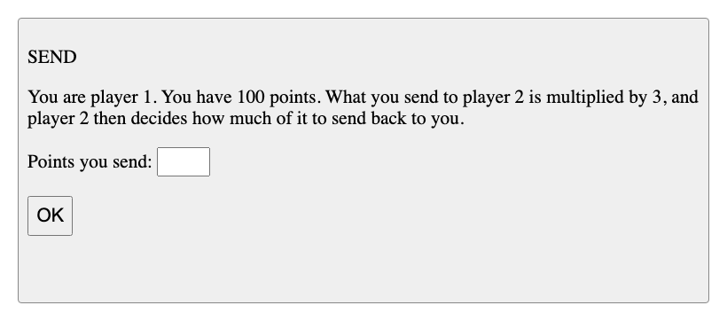
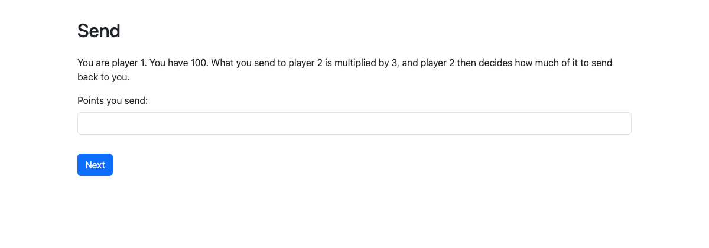
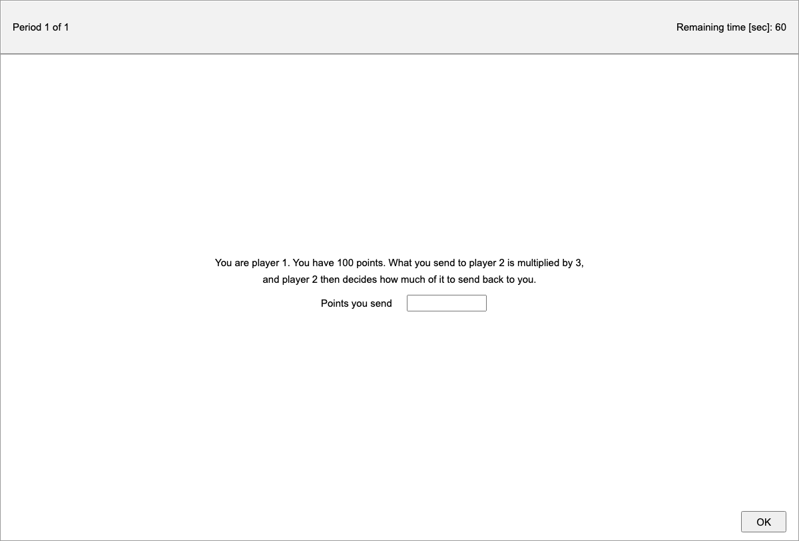

jtree comes with a library of economics experiments, each written three times: as a jtree app, as an oTree app and as a z-Tree treatment. The three versions of an experiment have the same design (its players, periods, roles, screens and payoffs), so they can be compared side by side, and a study can start from whichever engine it runs on. jtree runs all three.
The library is in jtree's apps folder, client/apps/samples:
jtree/<game>.jtt: the jtree apps;otree/: an oTree project, with an app and a session config for each game;ztree/<game>.ztt: the z-Tree treatments, in z-Tree 5.1's format.
Running them
- In jtree: in the admin's Browse panel, open a game under
samples, in any of its three versions, and start a session with it (see Running a Session). oTree's versions are also listed as their session configs (samples/otree/settings.py#trust). - In oTree (5.11 or later): in
client/apps/samples/otree, runotree devserver, orotree test trustto play a game with its bots. - In z-Tree (5.1): open the
.zttfile, and start as many z-Leafs as the treatment has subjects. Each treatment is also linked as text, in z-Tree's text format (File → Import reads it).
The trust game's first screen, in its three versions, as participants see them in jtree:



The experiments
Each links to its three versions. The jtree and oTree versions take any number of participants, in groups of the size given (filled in order); the z-Tree treatments are for one group (as many subjects as it has players).
Giving and trust
Dictator game. In each pair, player 1 decides how to split 100 points between themselves and player 2, who has no say. Pairs, 1 period.
jtree · oTree · z-Tree (as text) · from jtree's dictator game, oTree's dictator
Ultimatum game. Player 1 offers player 2 a share of 100 points. If player 2 accepts, the points are split as offered; if not, both get nothing. Pairs, 1 period.
jtree · oTree · z-Tree (as text) · from z-Tree's ug, jtree's ultimatum game
Trust game. Player 1 has 100 points and sends some to player 2; what is sent is tripled, and player 2 decides how much of it to send back (Berg, Dickhaut and McCabe, 1995). Pairs, 1 period.
jtree · oTree · z-Tree (as text) · from oTree's trust and trust_simple, jtree's trust game
Bargaining (Nash demand game). Both players ask for a share of 100 points at once. If the requests add up to 100 or less, each gets what they asked for; otherwise both get nothing. Pairs, 1 period.
jtree · oTree · z-Tree (as text) · from oTree's bargaining
Social dilemmas
Public goods game. Each of 4 players has 20 points and decides how many to contribute to a group project. Contributions are doubled and shared equally. Groups of 4, 10 periods.
jtree · oTree · z-Tree (as text) · from jtree's public goods game, oTree's public_goods_simple, z-Tree's pg
Public goods game with punishment. After contributing, players see the others' contributions and can pay up to 3 points to punish each of them; each point paid takes 2 from its target (Fehr and Gächter, 2000). Groups of 4, 10 periods.
jtree · oTree · z-Tree (as text) · from jtree's public goods game with punishment
Prisoner's dilemma. Both players choose to cooperate or defect at once. Defecting pays more whatever the other does, but both do better if both cooperate. Pairs, 1 period.
jtree · oTree · z-Tree (as text) · from oTree's prisoner, z-Tree's pd
Volunteer's dilemma. If at least one of 3 players volunteers, everyone gets 100 points; each volunteer pays 40 (Diekmann, 1985). Groups of 3, 1 period.
jtree · oTree · z-Tree (as text) · from oTree's volunteer_dilemma
Traveler's dilemma. Both players claim 2 to 100 points. Both get the lower claim; the lower claimant gets 2 more, the higher 2 less (Basu, 1994). Pairs, 1 period.
jtree · oTree · z-Tree (as text) · from oTree's traveler_dilemma, jtree's traveller's dilemma
Coordination and strategy
Stag hunt. Both players hunt stag or hare. A stag needs both hunters (100 points each); hare is safe (60 points); stag alone gets nothing. Pairs, 1 period.
jtree · oTree · z-Tree (as text) · from jtree's stag hunt
Battle of the sexes. Both players want to choose the same option, but player 1 prefers A and player 2 prefers B. Pairs, 1 period.
jtree · oTree · z-Tree (as text) · from z-Tree's game222
Matching pennies. Both choose heads or tails. The matcher wins 100 points if the choices match, the mismatcher if they differ; the roles swap after period 2. Pairs, 4 periods.
jtree · oTree · z-Tree (as text) · from oTree's matching_pennies
Beauty contest (guess 2/3 of the average). Each player guesses 0 to 100; the guess closest to 2/3 of the average wins 100 points. Groups of 3, 3 periods.
jtree · oTree · z-Tree (as text) · from jtree's beauty contest, oTree's guess_two_thirds
Market entry. Each of 4 players decides whether to enter a market with room for 2: staying out pays 10, entering 10 + 20 × (2 − the number of entrants). Groups of 4, 5 periods.
jtree · oTree · z-Tree (as text) · from jtree's market entry game
Centipede game. Players take turns: take 80% of the pot, which ends the game, or pass, which doubles it. After 6 passes, the pot is shared (McKelvey and Palfrey, 1992). Pairs, 1 period.
jtree · oTree · z-Tree (as text) · from jtree's centipede game
Industrial organization
Cournot competition. Two firms choose quantities (0 to 30); the price is 60 minus the total, and each earns the price times its units. Pairs, 1 period.
jtree · oTree · z-Tree (as text) · from oTree's cournot
Bertrand competition. Two firms set prices (0 to 100) for the same good; the cheaper one sells and earns its price (Kruse et al., 1994). Pairs, 1 period.
jtree · oTree · z-Tree (as text) · from oTree's bertrand
Auctions and markets
Common value auction. The item is worth the same unknown amount to 3 bidders, who each get an estimate of it; the highest bid wins and pays its bid, which may be more than the item is worth (the winner's curse). Groups of 3, 1 period.
jtree · oTree · z-Tree (as text) · from oTree's common_value_auction
Dutch auction. Each bidder values the item privately. The price starts at 100 and falls by 5 every 2 seconds; the first to accept buys at that price. Groups of 3, 3 periods.
jtree · oTree · z-Tree (as text) · from z-Tree's dutchauction
Double auction. Buyers bid and sellers ask for units with values and costs of their own, improving on the best standing offer or taking it, for 2 minutes (Smith, 1962). 4 buyers and 4 sellers, 2 periods.
jtree · oTree · z-Tree (as text) · from z-Tree's noda
Asset market. Traders buy and sell shares that pay a random dividend after each period, and nothing after the last (Smith, Suchanek and Williams, 1988). 4 traders, 10 periods of 60 seconds.
jtree · oTree · z-Tree (as text) · from jtree's double auction, z-Tree's asset_da
Tasks and surveys
Real-effort task. Add up sums of three two-digit numbers, one after another, for 60 seconds; each correct sum earns a point. 1 participant, 1 period.
jtree · oTree · z-Tree (as text) · from jtree's real-effort task
Survey. Age and gender, then the three questions of the cognitive reflection test (Frederick, 2005). 1 participant.
jtree · oTree · z-Tree (as text) · from oTree's survey
How they are checked
jtree's tests (server/test/samples.test.js) play each experiment in its three versions, with the same moves (a dictator keeps 70, a firm produces 20 units, ...), each to its end, and expect the same payoffs from all three. oTree's versions are played by their own bots (each app's tests.py), which make those moves and check the payoffs; they pass in oTree 5.11.5 itself too (otree test). The z-Tree versions were imported into z-Tree 5.1.21, which found no errors in them, and saved by it as the .ztt files; jtree's generic z-Tree bot also plays each to its end.
Where they come from
The library gathers the games of jtree's former sample apps, of oTree's sample games, and of z-Tree's examples (https://www.ztree.uzh.ch/en/examples.html), each written anew for the other two engines. oTree's versions of oTree's games are adapted from oTree's samples, under oTree's licence (MIT, with its request to cite Chen, Schonger and Wickens, 2016, in publications of results); the z-Tree versions follow the designs of z-Tree's examples, but are jtree's own. See client/apps/samples/README.md.
To add a game, write its three versions with the same design, then add it to samples.test.js, with the moves to play and the payoffs they should give.